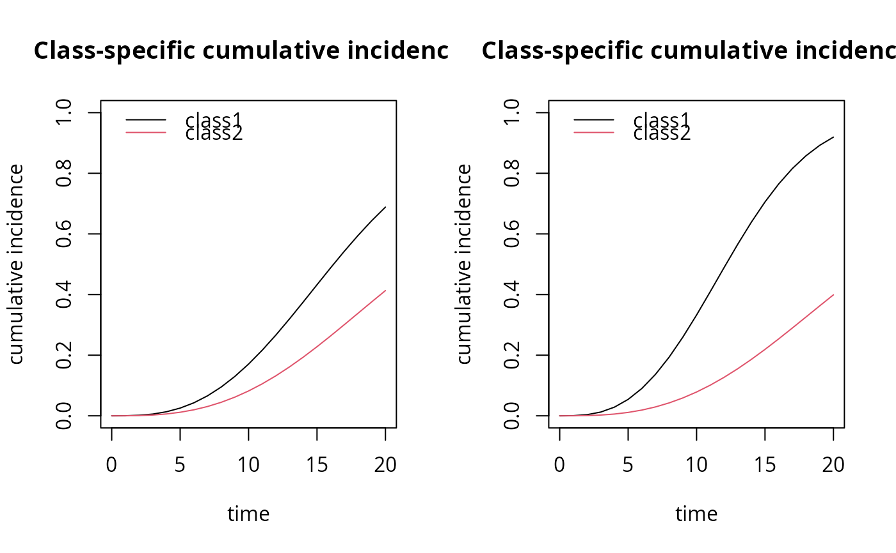

Predicted cumulative incidence of event according to a profile of covariates
Source:R/cuminc.R
cuminc.RdThis function computes the predicted cumulative incidence of each cause of event according to a profile of covariates from a joint latent class model. Confidence bands can be computed by a Monte-Carlo method.
Arguments
- x
an object inheriting from class
Jointlcmmormpjlcmm- time
a vector of times at which the cumulative incidence is calculated
- draws
optional boolean specifying whether a Monte Carlo approximation of the posterior distribution of the cumulative incidence is computed and the median, 2.5% and 97.5% percentiles are given. Otherwise, the predicted cumulative incidence is computed at the point estimate. By default, draws=FALSE.
- ndraws
if draws=TRUE, ndraws specifies the number of draws that should be generated to approximate the posterior distribution of the predicted cumulative incidence. By default, ndraws=2000.
- integrateOptions
optional list specifying the subdivisions, rel.tol and stop.on.error options (see ?integrate).
- ...
further arguments, in particular values of the covariates specified in the survival part of the joint model.
Value
An object of class cuminc containing as many matrices as
profiles defined by the covariates values. Each of these matrices contains
the event-specific cumulative incidences in each latent class at the
different times specified.
Examples
m2 <- Jointlcmm(fixed= Ydep1~Time*X1,mixture=~Time,random=~Time,
classmb=~X3,subject='ID',survival = Surv(Tevent,Event)~X1+mixture(X2),
hazard="3-quant-splines",hazardtype="PH",ng=2,data=data_lcmm,
B=c(0.64,-0.62,0,0,0.52,0.81,0.41,0.78,0.1,0.77,-0.05,10.43,11.3,-2.6,
-0.52,1.41,-0.05,0.91,0.05,0.21,1.5))
par(mfrow=c(1,2))
plot(cuminc(m2,time=seq(0,20),X1=0,X2=0), ylim=c(0,1))
plot(cuminc(m2,time=seq(0,20),X1=0,X2=1), ylim=c(0,1))
